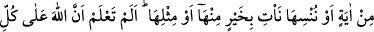

NESİH MESELESİ
104. Ey îmân edenler! “Râinâ” demeyin, “unzurnâ” deyin (Söylenenleri) dinleyin.
Kâfirler için elem verici bir azâb vardır.
105. (Ey mü’minler!) Ehl-i kitaptan kâfirler ve putperestler de Rabbinizden size
bir hayır indirilmesini istemezler. Halbuki Allah rahmetini dilediğine verir. Allah
büyük lütuf sahibidir.
106. Biz, bir âyetin hükmünü yürürlükten kaldırır veya onu unutturursak
(ertelersek) mutlaka daha iyisini veya benzerini getiririz. Bilmez misin ki Allah
herşeye kadirdir.
107. (Yine) bilmez misin, göklerin ve yerin mülkiyet ve hükümranlığı yalnızca
Allah’ındır? Sizin için Allah’dan başka ne bir dost ne de bir yardımcı vardır.